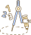
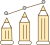

-
 1회기
1회기
나와 자녀의
관계 이해하기 -
 2회기
2회기
나와 자녀의
관계 증진하기(1) -
 3회기
3회기
나와 자녀의
관계 증진하기(2) -
 4회기
4회기
부모로서의
자신 모습찾기
- 시작하기
- 첫째,
우리 아이
성장기 - 둘째,
발달단계 부모역할
<임신·출산기> - 셋째,
발달단계 부모역할
<영아·유아기> - 넷째,
발달단계 부모역할
<아동·청소년기> - 정리하기
발달단계 부모역할 <아동·청소년기>

아동기
청소년기
아동기
(초등학교 시기)
# 부모역할
설명하여 깨우쳐주기 : 근면성과 자아개념이 발달한 시기
# 주요과업
신체적 양육에서 심리적 양육으로 : 타인과 접촉과 경험이 많아짐에 따라 격려자로서 부모역할 필요
근면성과 자아개념 발달 : 자녀의 성취경험을 가질 수 있도록 도움을 주고 근면성 발달을 도움. 자녀와 상호작용하며 자신감과 긍정적인 자아개념을 갖도록 도움
또래관계지도 : 이 시기 자녀는 친구가 중요해지고 또래로부터 수용되고 인정받음으로 정서적 안정감을 가지고 긍정적 자아개념 형성
# 아동기 자녀 키우기 양육정보 TIP
"훈육의 방법이 달라져요."
바람직한 행동이 어떤 것인지 설명하기 위해 정당한 근거를 제시해줍니다.
아동의 행동이 자신과 다른 사람에게 미치는 영향을 강조하여 바람직한 행동으로 유도합니다.
"성교육이 필요한 시기예요."
자녀는 부모의 태도나 행동을 보고 배우기 때문에 부부의 다정한 모습을 보여주면서 모범을 보여주세요.
아이들의 호기심에 부모가 자연스럽고 명확하게 가르쳐주면 사춘기 이후에도 성문제를 자연스럽게 느끼고 적절한 방법으로 표현할 수 있어요.
# 아동의 또래관계 향상을 위한 Tip
1. 부모 사랑을 충분히 표현하기
자녀를 자주 혼내거나 형제간 비교를 하면 아이 입장에서는 사랑받는다고 느끼지 못합니다. 평소 부모에게 어떻게 대하는지 잘 관찰해주세요.
2. 친구와 노는 시간을 많이 주기
친구와 실컷 놀아 보아야 우정도 느끼고 경험으로 터득할 수 있습니다.
3. 먼저 한 명의 친구와 놀게 하기
친구의 시작은 단짝이다. 친구 사귀기 어려운 아이는 둘씩 먼저 놀게 해 주는 게 좋으며 그 다음 여럿이 노는 기회를 줍니다.
4. 나이 차가 있는 아이부터 어울려보게 하기
나이가 많은 아이는 봐주기도 하여 갈등이 적기 때문에 마음 편안한 상대부터 어울려보게 합니다.
5. 부모가 이웃을 사귀고 집에 초대하기
아이들이 어릴 때는 부모끼리 친해야 아이끼리도 친구가 됩니다. 부모가 이웃과 사귀어 서로 왕래하고 함께 놀러 다니기도 하면서 자연스레 놀 수 있는 기회가 마련됩니다.
청소년기
(중·고등학교 시기)
# 부모역할
자녀를 존중해 주기 : 자율성과 주도성 발달하는 시기
# 주요과업
믿고 의지할 수 있는 부모 : 또래 사회를 경험하면서 ‘자기’에 대한 개념이 없는 아이들은 어울리지 못하고 도리어 피해버리기 쉬우므로 부모는 아이가 믿고 의지할 수 있는 버팀목이 되어주어야 함
자녀의 반항과 방황에 대한 부모역할 : 부모로부터 떨어져 나가려는 시도인 반항하는 모습도 수용하고 어른이 되고 싶어 하는 욕구를 받아들이는 융통성이 필요함.
# 청소년기 자녀 키우기 양육 정보
"대화로 신뢰를 쌓아요."
잠깐이라도 아이와 시간을 보내면서 오늘 하루는 어땠는지 물어보고 꾸준히 대화를 시도해요.
어릴때부터 가족활동을 많이 하면서 아이가 혼자 고립되지 않도록 해요.
"청소년기도 칭찬이 필요해요."
잘못한 행동에 대해 꾸짖기만 하면 자존감을 떨어뜨리고 기분이 상하게 됩니다. 실수하면 더 잘할 수 있다고 알려주세요. 자신감을 길러주는 것이 최고의 선물입니다.
# 청소년기 자녀의 방황과 비행에 대한 부모 역할 Tip
1. 청소년기는 자아를 찾아 방황하고 여러 가지를 시도해 보는 것이 자연스러운 시기임을 받아들이기
2. 부모는 항상 자녀를 믿고 지켜봐준다는 확신이 들 수 있도록 초조해하거나 불안해하지 않기
3. 아이가 자신의 능력에 조급해 할 때도 느긋하게 기다려주기
4. 아이의 실수나 실패에 실망하거나 슬퍼하기보다 실패로 인해 인격적으로 풍요로워질 수 있음을 기억하기